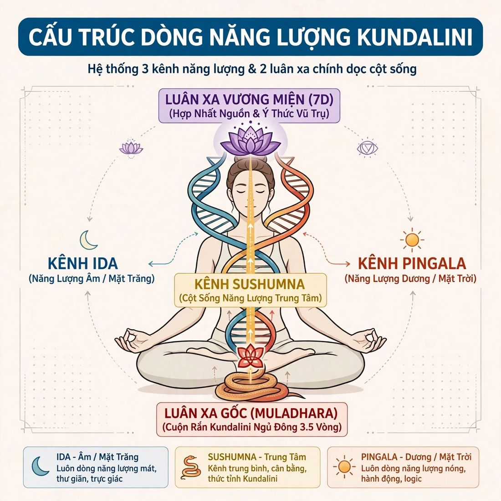
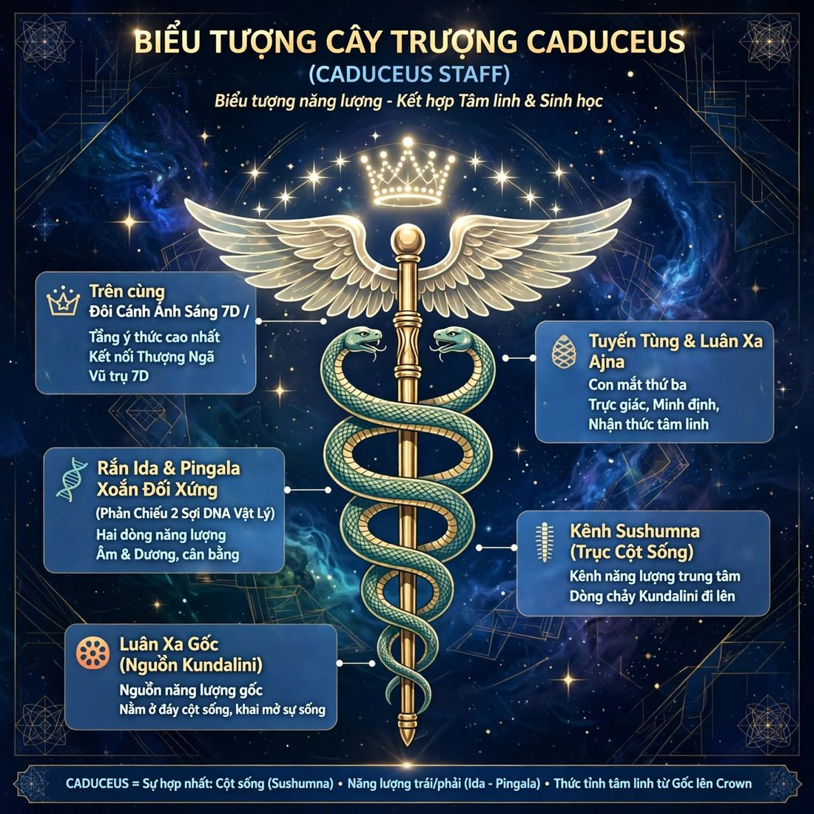
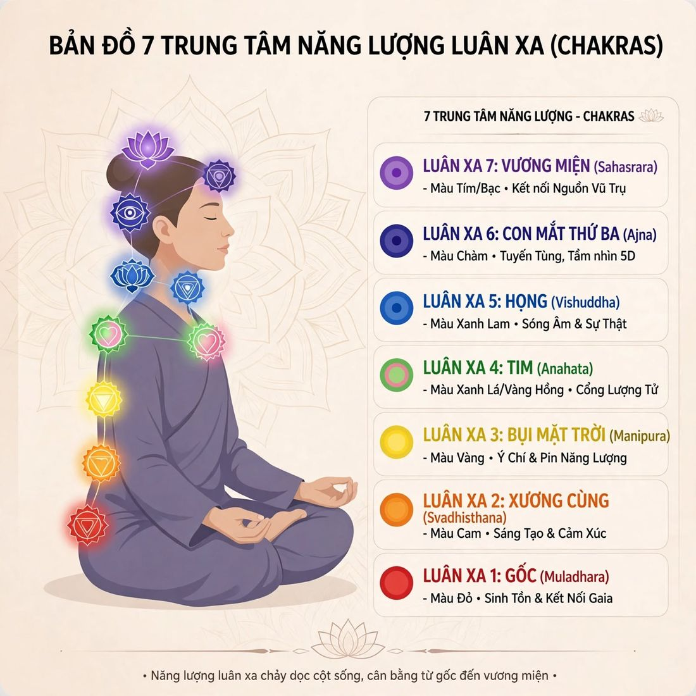
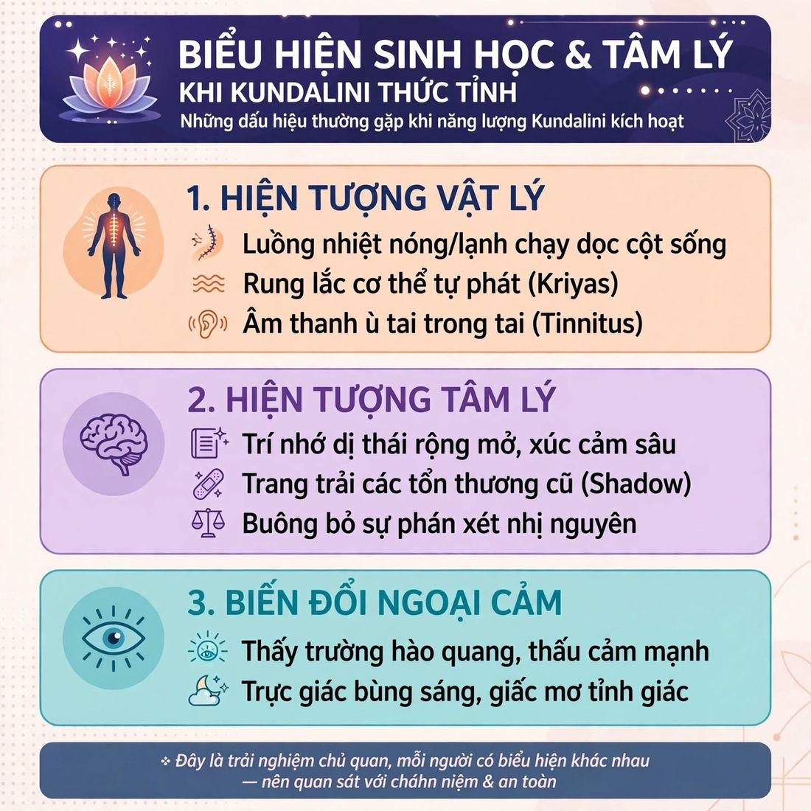
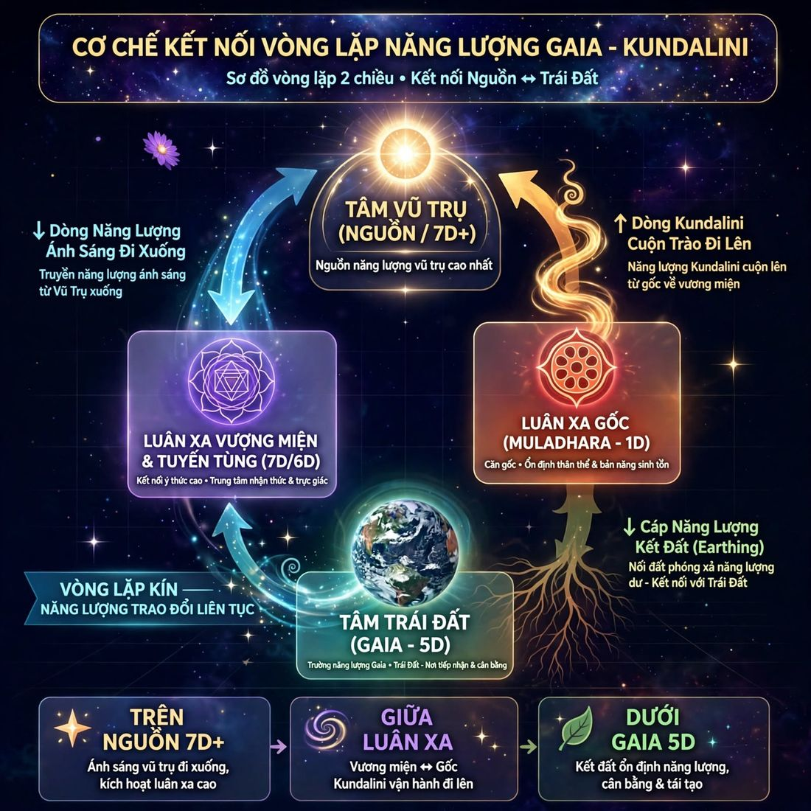
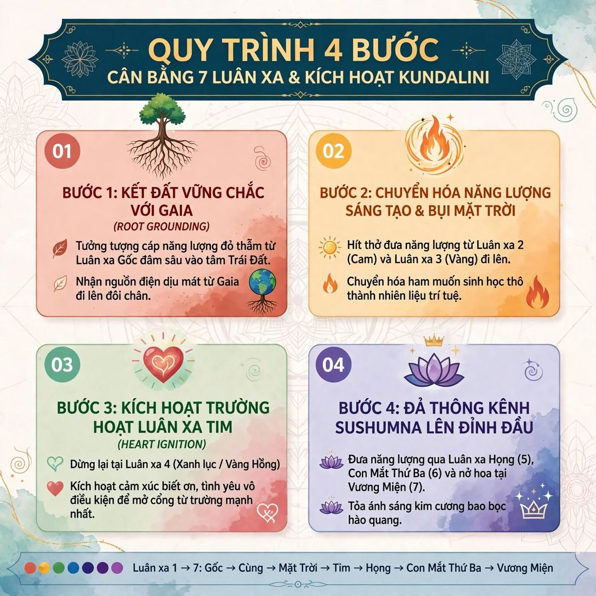

Trang chủ / Chuyên đề 9: Cẩm Nang Tâm Thức Vũ Trụ / Kỳ 85
Chuyên đề 9 · Kỳ 85 / 90
DÒNG NĂNG LƯỢNG KUNDALINI VÀ BẢN ĐỒ THỨC TỈNH 7 LUÂN XA

1. Bản Chất Năng Lượng Nguyên Thủy Kundalini: Ngọn Lửa Sinh Học Lượng Tử
Trong toàn bộ cấu trúc sinh học lượng tử và hệ thống thể năng lượng dĩ thái (Etheric Body) của con người, Kundalini được công nhận là nguồn Năng Lượng Sống Nguyên Thủy (Primal Life Force / Phryll / Vril) tối cao và mạnh mẽ nhất. Mặc dù các trường học siêu hình 3D cổ đại thường miêu tả Kundalini dưới dạng hình tượng một con rắn cuộn mình 3 vòng rưỡi nằm ngủ đông tại đáy cột sống, các phân tích từ khoa học thiên hà tiên tiến khẳng định một thực tại vật lý lượng tử sâu sắc hơn: Kundalini chính là nguồn năng lượng sinh học lượng tử điểm không (Zero-Point Bio-Energy), là chiếc cầu nối trực tiếp giữa thể xác sinh học 3D với dải tâm thức đa chiều 5D+.
Khi ngọn lửa Kundalini bắt đầu thức tỉnh, dòng năng lượng này sẽ cuộn trào đi lên theo trục cột sống trung tâm — kênh Sushumna Nadi — đồng thời xoắn cuộn nhịp nhàng qua hai kênh năng lượng phân cực: kênh Ida (năng lượng âm, dịu mát, mang tính Mặt Trăng) và kênh Pingala (năng lượng dương, ấm áp, mang tính Mặt Trời).
Quá trình Kundalini đi lên sẽ lần lượt khai mở, cuộn xoáy và đả thông 7 trung tâm năng lượng luân xa (Chakras) chính nằm dọc theo cơ thể dĩ thái. Khi dòng năng lượng này vươn lên tới đỉnh đầu, đả thông Tuyến Tùng và nở hoa tại Luân xa Vương Miện (Sahasrara), thể xác sinh học con người sẽ trải nghiệm sự chuyển hóa toàn diện về mặt tần số: các tế bào được tái cấu trúc thành dạng Tinh thể (Silicon-Crystalline), trường hào quang mở rộng tối đa và cá nhân chính thức khôi phục lại nhận thức đa chiều của một Sinh mệnh Vũ trụ.

2. Bí Mật Cây Trượng Caduceus: Biểu Tượng Di Truyền Của Enki Và Bộ Gen Humanoid
Một trong những biểu tượng cổ xưa và bị bóp méo nhiều nhất trên Trái Đất chính là hình ảnh Cây Trượng Caduceus (hai con rắn xoắn cuộn đối xứng quanh một cây trượng trung tâm, đỉnh trượng có đôi cánh xòe rộng). Ngày nay, biểu tượng này thường được dùng trong ngành y tế hoặc thương mại 3D mà ít ai hiểu được nguồn gốc sinh học thiên hà đích thực của nó.
Theo các tài liệu giải mật từ Elena Danaan và kho tàng di sản Anunnaki cổ đại, Cây Trượng Caduceus chính là ấn ký cá nhân của Enki (Ea) — nhà khoa học di truyền thiên hà tối cao thuộc Hoàng gia Anunnaki, người đã phối hợp cùng 24 chủng tộc Đấng Sáng Lập (Paa-Taal) để thiết kế nên bộ gen Adamu (loài người Trái Đất).
Phe kiểm soát Ma trận 3D trong suốt hàng ngàn năm qua đã tìm mọi cách gieo rắc sự sợ hãi đối với hình tượng "Con Rắn", biến rắn thành biểu tượng của sự ác quỷ hay cấm đoán. Mục đích thật sự của chiến dịch psyops này là khiến con người sợ hãi và chối bỏ chính Dòng Năng Lượng Kundalini Nguyên Thủy bên trong cơ thể mình, từ đó ngăn cản tiến trình thức tỉnh tự nhiên của bộ gen 12 sợi.
Hình ảnh hai con rắn cuộn quanh cây trượng Caduceus chính là bản thiết kế di truyền mà Enki đã trao cho nhân loại. Cây trượng là cột sống, hai con rắn là hai dòng Kundalini Ida và Pingala xoắn quanh 2 chuỗi DNA vật lý, và đôi cánh trên đỉnh trượng là sự bứt phá nhận thức khi bộ gen 12 sợi được kích hoạt hoàn toàn."
— Trích lược Hồ sơ Giải mật Di sản Anunnaki (Elena Danaan)

3. Bản Đồ Chi Tiết 7 Trung Tâm Năng Lượng Luân Xa (Chakras) Trong Thể Etheric
Để thấu hiểu cách thức Kundalini luân chuyển và nâng cấp hệ sinh học, việc nắm vững bản đồ 7 trung tâm năng lượng luân xa (Chakras) chính là nền tảng không thể thiếu. Mỗi luân xa đóng vai trò như một bánh xe năng lượng xoay tròn (vortex), điều hòa một dải tần số cụ thể và quản lý các tuyến nội tiết tương ứng trên thể xác.
Luân Xa 1 (Muladhara - Luân Xa Gốc)
Vị trí & Màu sắc: Đáy cột sống (vùng tầng sinh môn); Màu Đỏ thẫm.
Tần số & Nguyên tố: Tần số sinh tồn 3D; Nguyên tố Đất (Earth).
Chức năng: Là nơi cuộn mình ngủ đông của ngọn lửa Kundalini. Quản lý bản năng sinh tồn, cảm giác an toàn, sự kết đất (Earthing) với tâm Trái Đất (Gaia) và cấu trúc xương, răng, hệ miễn dịch.
Luân Xa 2 (Svadhisthana - Luân Xa Xương Cùng)
Vị trí & Màu sắc: Vùng dưới rốn khoảng 3-5 cm; Màu Cam rực rỡ.
Tần số & Nguyên tố: Dải tần số cảm xúc; Nguyên tố Nước (Water).
Chức năng: Trung tâm của năng lượng sáng tạo sinh học, cảm xúc và ham muốn. Nơi lưu trữ các dòng chảy năng lượng giới tính — vốn là nguồn nhiên liệu thô cực kỳ mạnh mẽ để chuyển hóa lên Kundalini khi được định hướng đúng đắn.
Luân Xa 3 (Manipura - Luân Xa Búi Mặt Trời)
Vị trí & Màu sắc: Vùng thượng vị (trên rốn); Màu Vàng kim.
Tần số & Nguyên tố: Dải tần số bản ngã cá nhân; Nguyên tố Lửa (Fire).
Chức năng: Đóng vai trò là "Viên Pin Sinh Học" của cơ thể, quản lý ý chí cá nhân, sức mạnh bản thể, sự tự tin và hệ tiêu hóa. Đây là nơi tiếp nhận và xử lý các bài học về sự kiểm soát và quyền lực 3D.
Luân Xa 4 (Anahata - Luân Xa Tim)
Vị trí & Màu sắc: Trung tâm lồng ngực; Màu Xanh Lá Lục Bảo hoặc Vàng Hồng.
Tần số & Nguyên tố: Dải tần số Tình yêu Vô điều kiện; Nguyên tố Không Khí (Air) & Ether.
Chức năng: Cổng Kết Nối Lượng Tử Trung Tâm nằm giữa 3 luân xa thể xác bên dưới và 3 luân xa tâm linh bên trên. Luân xa Tim phát ra từ trường mạnh gấp 5.000 lần脑 bộ, là chìa khóa bẻ khóa mọi rào cản phong tỏa của Ma trận 3D.
Luân Xa 5 (Vishuddha - Luân Xa Họng)
Vị trí & Màu sắc: Vùng cổ họng; Màu Xanh Lam Ngọc (Cyan / Sky-Blue).
Tần số & Nguyên tố: Dải tần số sóng âm vô hướng; Nguyên tố Âm Thanh (Sound/Ether).
Chức năng: Trung tâm của sự thật, khả năng diễn đạt ngôn ngữ tần số và sáng tạo thông qua lời nói. Đây là nơi giải mã Cổ ngữ Taami và các bản hợp âm chữa lành thiên hà.
Luân Xa 6 (Ajna - Con Mắt Thứ Ba)
Vị trí & Màu sắc: Vùng trán giữa hai lông mày; Màu Tím Chàm (Indigo).
Tần số & Nguyên tố: Dải tần số ánh sáng sinh học; Nguyên tố Ánh Sáng (Light).
Chức năng: Trung tâm chỉ huy tinh thần gắn liền với Tuyến Tùng và Tuyến Yên. Mở rộng dải quang phổ nhận thức lên 223 sắc màu dĩ thái, kích hoạt năng lực thấu thị và thần giao cách cảm ba chiều.
Luân Xa 7 (Sahasrara - Luân Xa Vương Miện)
Vị trí & Màu sắc: Đỉnh đầu; Màu Tím Ánh Bạc hoặc Ánh Sáng Kim Cương.
Tần số & Nguyên tố: Dải tần số Ý thức Thống nhất 7D+; Nguyên tố Tâm Thức Thuần Khiết.
Chức năng: Được miêu tả như đóa hoa sen 1.000 cánh hoa xoay mở. Khi Kundalini vươn tới luân xa 7, ranh giới giữa cá thể và Đa vũ trụ hoàn toàn tan biến, đưa sinh mệnh vào trạng thái hợp nhất tuyệt đối với Nguồn Vũ Trụ (The Is-ness).

4. Các Hiện Tượng Sinh Học & Tâm Lý Khi Dòng Kundalini Thức Tỉnh
Quá trình thức tỉnh Kundalini là một tiến trình chuyển dịch điện từ trường vô cùng mạnh mẽ. Khi năng lượng Kundalini cuộn trào qua các kênh dĩ thái, cá nhân sẽ trải nghiệm chuỗi các hiện tượng sinh học và tâm lý đặc trưng:
Biểu Hiện Sinh Học Thể Xác
Dòng Nhiệt Chạy Dọc Cột Sống: Cảm giác có một luồng điện ấm áp hoặc ngọn lửa nóng ấm cuộn trào từ đáy cột sống đi thẳng lên đỉnh đầu.
Sự Rung Tác Tự Phát (Kriyas): Cơ thể có những cơn rung lắc nhẹ hoặc nhịp giật tự nhiên khi năng lượng Kundalini đi qua các điểm tắc nghẽn luân xa để đả thông dòng chảy.
Âm Thanh Dĩ Thái Nội Thể (Inner Nada Sound): Nghe thấy các tiếng ve kêu, tiếng sóng biển hoặc âm thanh dải tần số cao (Tinnitus) rền vang bên trong Tuyến Tùng do sự tăng vọt điện thế nơ-rôn.
Chuyển Hóa Tâm Lý & Nhận Thức
Tiến Trình Chữa Lành Bóng Tối (Shadow Work): Kundalini cuộn qua các luân xa 2 và 3 sẽ đẩy toàn bộ các tổn thương cảm xúc, nỗi sợ hãi bẩm sinh hoặc áp lực đè nén trong quá khứ lên bề mặt để cá nhân đối diện và buông bỏ.
Mở Rộng Băng Thông Thấu Cảm: Cảm nhận sâu sắc niềm vui, nỗi đau và trường năng lượng của những người xung quanh mà không còn bị rào cản bản ngã ngăn cách.

5. Cơ Chế Chuyển Hóa Năng Lượng Gốc Nối Với Tần Số 5D Của Trái Đất (Gaia)
Một sai lầm nguy hiểm trong nhiều phương pháp luyện tập 3D là chỉ tập trung kéo năng lượng Kundalini vọt nhanh lên đỉnh đầu mà bỏ qua sự Kết Đất (Earthing / Grounding) với Trái Đất (Gaia).
Trái Đất (Gaia) không phải là một hòn đá vô giác, mà là một Sinh mệnh Ý thức 5D vĩ đại. Nhịp đập Schumann của Trái Đất đang liên tục tăng vọt tần số để thăng hoa lên dải 5D.
Khi cá nhân thiết lập được Sự Kết Đất Vững Chắc (Earthing Connection) giữa Luân xa Gốc với tâm Trái Đất:
Năng lượng Kundalini thô sẽ được sinh mệnh Gaia lọc sạch các dải tần tiêu cực và nạp thêm dòng điện dĩ thái ổn định.
Dòng Kundalini đi lên sẽ hợp nhất hoàn toàn với Dòng Ánh sáng từ Nguồn Vũ Trụ đi xuống tại Luân xa Tim, tạo ra một Vòng Lặp Năng Lượng Hình Xuyến (Toroidal Bio-Loop) hoàn hảo bao bọc trường hào quang.
Cơ thể sinh học được bảo vệ tuyệt đối khỏi hiện tượng quá tải điện thế hay tẩu hỏa nhập ma.

6. Quy Trình 4 Bước Thực Hành Mở Rộng & Cân Bằng 7 Luân Xa An Toàn
Dưới đây là quy trình 4 bước thực hành cân bằng 7 luân xa và đả thông Kundalini chuẩn mực hằng ngày dựa trên sự kết hợp giữa thiền định năng lượng và sự chuyển hóa nhận thức:

7. Kết Luận: Hợp Nhất Đôi Rắn Kundalini — Hành Trình Thăng Hoa Bản Thể
Năng lượng Kundalini và hệ thống 7 Luân xa không phải là những lý thuyết xa rời thực tế. Đó chính là Cơ Chế Vận Hành Sinh Học Lượng Tử được cài đặt sẵn bên trong mỗi sinh mệnh con người để phục vụ cho hành trình thăng hoa tâm thức.
Khi đôi rắn Kundalini Ida và Pingala xoắn cuộn nhịp nhàng qua trục cột sống, vươn lên đỉnh đầu và xòe rộng đôi cánh ánh sáng của Tuyến Tùng:
Bạn chính thức tháo bỏ mọi rào cản phong tỏa của Ma trận 3D.
Bạn kích hoạt lại di sản di truyền 12 chuỗi DNA mà Enki và các Đấng Sáng Lập đã trao tặng.
Bạn đứng vững với tư cách là một Sinh mệnh Vũ trụ Tự do, làm chủ thực tại và đóng góp vào chiến thắng hoàn lương của Thiên hà.
Hãy trân trọng và nuôi dưỡng ngọn lửa Kundalini bên trong bạn mỗi ngày bằng lối sống tinh khiết, tình yêu thương từ Trái Tim và sự kết nối sâu sắc với Mẹ Trái Đất Gaia!